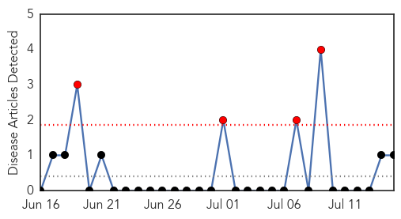
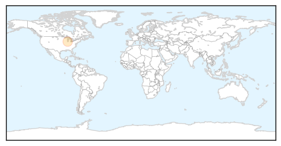
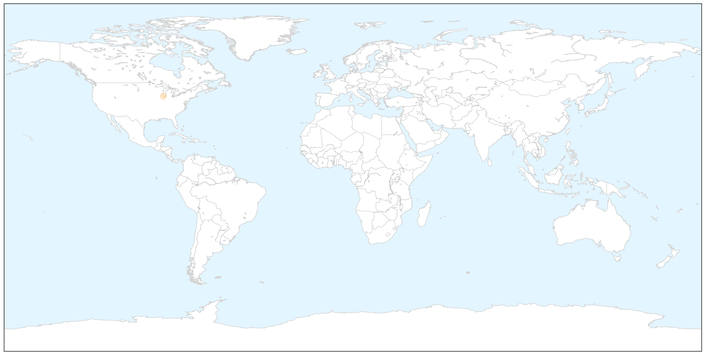
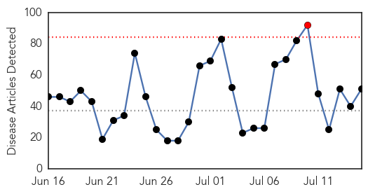
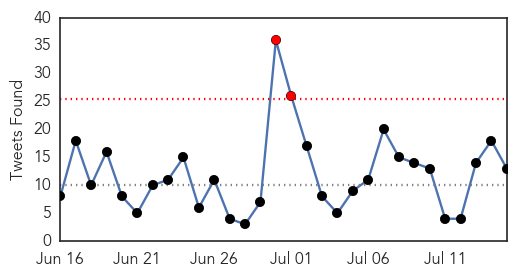
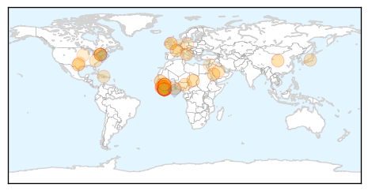
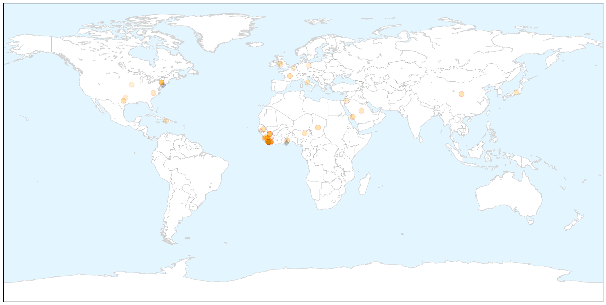
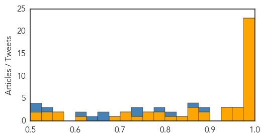

Mold/Fungal
30-Day Web Trend
4 alerts, 0 warnings

30-Day Twitter Trend
0 alerts, 0 warnings

Article Locations

X

Article Confidences

Top Articles:
Top Tweets:
-
No tweets found for Jul 15, 2015
Ebola
30-Day Web Trend
1 alerts, 0 warnings

30-Day Twitter Trend
2 alerts, 0 warnings

Article Locations

X

Article Confidences
Top Articles:
- 1.000
- Re-emergence of Ebola in Liberia remains a mystery
- 1.000
- International Medical Corps nurse dies of Ebola in Sierra Leone
- 1.000
- Politico SL News Ebola crisis weakened Sierra Leone health system pillars
- 1.000
- Liberia Confirms Second Ebola Death
- 0.999
- Simple acts cut Haj Mers threat
- 0.999
- Fighting Ebola in Liberia: A lesson from Kikwit, Democratic Republic of Congo
- 0.999
- Scientists found out breathable Ebola vaccine that has been shown promising results in animal testing
- 0.999
- Liberia confirms 2nd Ebola death in resurgent outbreak
- 0.998
- Gene studies of Ebola in Sierra Leone show virus is mutating fast
- 0.998
- US Reveals 'Lessons Learned' on Africa's Ebola Outbreak
- 0.998
- Liberia confirms new Ebola case as outbreak spreads
- 0.997
- Liberia Confirms 6th Ebola Case As Outbreak Spreads
- 0.996
- Liberia confirms new Ebola CaseEagle Reporters
- 0.994
- Oxford Ebola vaccine study moves to next phase
- 0.993
- Liberia records 2nd Ebola death in fresh outbreak
- 0.993
- healthcare asia – medical and healthcare news in asia
- 0.992
- Ebola's Paper Trail
- 0.987
- North Wales man rushed to hospital in Ebola virus scare tests negative
- 0.987
- OP-ED: Quarantined Medics Escape Shadow of Death in Sierra Leone : Sierra Leone News
- 0.985
- Ebola hits Montserrado
- 0.983
- LIBERIA: Ebola Death Squad Hits Monrovia, Six Persons Pronounced Dead, As Sixteen Quarantined
- 0.979
- Politico SL News Speech: Into the hot zone: Covering Ebola
- 0.978
- Dreaded Ebola re-emerged breaking silence after 7-week slumber
- 0.975
- Gavi to support rebuilding of immunisation programmes in Ebola-affected countries - Sierra Leone
- 0.971
- Oxford Ebola vaccine study moves to next phase
- 0.955
- New Ebola death rate hits two in Liberia
- 0.934
- EU pledges €171.4 million to Sierra Leone for Ebola « Awoko Newspaper
- 0.933
- UNDP Continues Ebola Recovery Work After Pledges Made at International Conference - Sierra Leone
- 0.929
- SMAC Concludes Chiefdom Sensitisation on ‘Power of Community Members’ to End Ebola
- 0.894
- Why Are We So Scared Of Ebola Vaccine Trials In Ghana?
- 0.880
- Health Highlights: July 15, 2015
- 0.862
- Ebola aid workers killed by villagers
- 0.858
- African newspapers call for action on health
- 0.856
- EU pledges 450 Million Euros to Ebola- affected countries
- 0.826
- Archbishop Auza's Address to International Ebola Recovery Conference and Technical Consultation
- 0.813
- Smallholder farmers supply WFP with food during the Ebola outbreak and recovery - Sierra Leone
- 0.795
- Scientists Developed Inhalable Ebola Vaccine with Successful Monkey Trials
- 0.793
- West and Central Africa Region Weekly Humanitarian Snapshot (07 – 13 July 2015) - Chad
- 0.770
- Ebola Pledges Reach US$5 Billion
- 0.767
- Welcome to the Expotimes News
- 0.735
- US Alerts Citizens Of Potential Travel Implications Due To Ebola In West Africa
- 0.721
- Gates Foundation gives $20 million to Duke for global health
- 0.719
- Liberia seeks WTO accession to recover from Ebola crisis
- 0.678
- Will new Ebola pledges face same old accountability problem?
- 0.601
- Muslims Urged to Look for Eid crescent Tomorrow
- 0.570
- Today’s NewsStand (July 15, 2015)
- 0.559
- LIBERIA: NPA Managing Diretor, Parker’s Proficiency On ETU Project Wins Admiration - By Malcolm Scott/ Manager, NPA Public Affairs
- 0.546
- JFK to LAX Flight UA703
- 0.537
- Gurman Bhatia
- 0.512
- Study finds donor funds fall short for key global health functions
Showing top 50 articles...
Top Tweets:
- 0.899
- Liberia confirms second Ebola death in resurgent outbreak - Belfast Telegraph http://t.co/gRFjyIjmNJ ebola EVD
- 0.872
- International Medical Corps nurse dies of Ebola in Sierra Leone - The Guardian http://t.co/mYsUcb9OvW ebola EVD
- 0.821
- Liberia confirms new Ebola case as outbreak spreads - Yahoo News http://t.co/ci4wvEWLJT ebola EVD
- 0.795
- Liberia Confirms 2nd Ebola Death in Resurgent Outbreak - ABC News http://t.co/whtV2nhnM2 ebola EVD
- 0.742
- North Wales man rushed to hospital in Ebola virus scare tests negative - Daily Post North Wales http://t.co/jtfT08xVFf ebola EVD
- 0.738
- Ebola vaccine trial begins in Senegal - Medical Xpress http://t.co/VeNIJPcDh6 ebola EVD
- 0.674
- Ebola Nurse Dies in Freetown as Ebola Cases Surge in Capital http://t.co/R36Jc3AZte
- 0.667
- Feverish Narita returnee from Guinea hospitalized for Ebola checks - The Japan Times http://t.co/vcCzSip3I1 ebola EVD
- 0.628
- Re-emergence of Ebola in Liberia remains a mystery - USA TODAY http://t.co/zdYcAhOkYZ ebola EVD
- 0.604
- RT: How many health workers have been lost due to Ebola crisis in West Africa? http://t.co/2WoLLoxVvK EbolaResponse http://t…
- 0.531
- Two new trials of Ebola vaccines begin in Europe and Africa - Business Insider http://t.co/BquIoiKOwU ebola EVD
- 0.519
- “With such high death from Ebola we'll fight hard using all preventive measures to keep SierraLeone safe” HeardontheStreet
- 0.500
- In Guinea responding to Ebola by addressing rumors and resistance - UNICEF Connect (blog) http://t.co/5PB9SIvn0A ebola EVD